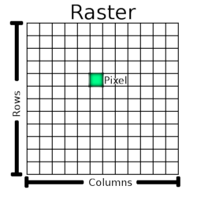
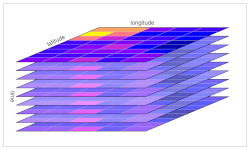

Core Concepts¶
This document explains the core concepts and data models used in openEO by TiTiler.
Data Model¶
In openEO, a datacube is a fundamental concept and a key component of the platform. While traditional openEO implementations use multi-dimensional arrays for data representation, openEO by TiTiler simplifies this concept by focusing on image raster data that can be processed on-the-fly and served as tiles or as light dynamic raw data.
Resolution and Dimension Management¶
The backend intelligently handles resolution and dimensions using these key principles:
- Default Resolution Control:
- The
load_collectionprocess defaults to a width of 1024 pixels - This intentionally avoids loading data at native resolution by default, which could cause memory issues
- Users can explicitly request native resolution by providing their own width/height parameters
-
The default provides a good balance between quality and performance
-
Native Resolution Access:
- Resolution information is extracted from source metadata (transform or shape)
- When width/height parameters are provided, proportions are maintained
-
Resolution is adjusted based on the requested spatial extent
-
Early Resolution Optimization:
- Resolution is determined during initial data loading
- Cropping adjusts resolution proportionally
- CRS reprojection accounts for resolution changes
CRS Management and the target_crs Parameter¶
openEO by TiTiler is designed primarily for tiling applications, where data needs to be served efficiently through XYZ tile endpoints. This context strongly influences how Coordinate Reference Systems (CRS) are handled.
Tile-Centric CRS Design¶
When serving tiles, the output CRS is determined by the Tile Matrix Set (TMS) being used—typically Web Mercator (EPSG:3857) for web mapping. This means:
- XYZ Tile Endpoints: Always reproject data to match the TMS CRS automatically
- Process Graph Endpoints: Can preserve native CRS or use explicit
target_crs - Resolution Units: Match the CRS being used (meters for UTM/Web Mercator, degrees for EPSG:4326)
The target_crs Parameter¶
The load_collection process accepts a target_crs parameter that controls the output CRS independently of the bounding box CRS:
target_crs Value |
Behavior |
|---|---|
null (default) |
Preserve the native CRS from the source images |
EPSG code (e.g., 32632) |
Reproject output to that CRS |
| WKT2 string | Reproject output to the specified CRS |
Important distinction: The spatial_extent defines where to load data (bbox coordinates), while target_crs defines what CRS the output should be in:
{
"process_id": "load_collection",
"arguments": {
"id": "sentinel-2-l2a",
"spatial_extent": {
"west": 10.0,
"east": 11.0,
"south": 45.0,
"north": 46.0,
"crs": 4326
},
"target_crs": null
}
}
In this example:
- The bbox is interpreted in EPSG:4326 (lat/lon degrees)
- The output preserves the native CRS of the source data (e.g., UTM zone 32N for Sentinel-2)
Resolution and CRS Interaction¶
When specifying resolution in meters (e.g., resample_spatial with resolution: 100), the CRS must be in a projected coordinate system where units are meters:
| CRS Type | Resolution Interpretation |
|---|---|
| UTM (e.g., EPSG:32632) | 100 = 100 meters |
| Web Mercator (EPSG:3857) | 100 = ~100 meters (with distortion at higher latitudes) |
| WGS84 (EPSG:4326) | 100 = 100 degrees (incorrect for most use cases!) |
Best Practice: When using resample_spatial with meter-based resolution, ensure target_crs is set to a projected CRS or left as null to preserve the native projected CRS of the source data.
XYZ Tile Endpoint Behavior¶
The XYZ tile endpoint automatically sets target_crs to match the Tile Matrix Set's CRS:
This ensures tiles are served in the correct projection regardless of what target_crs is specified in the process graph. The tile endpoint overrides target_crs with tms.crs (typically Web Mercator).
Raster Data Model¶
The backend uses three primary data structures for efficient processing:
- ImageData: Most processes use
ImageDataobjects provided by rio-tiler for individual raster operations. This object was initially designed to create slippy map tiles from large raster data sources and render these tiles dynamically on a web map. Each ImageData object inherently has two spatial dimensions (height and width).

- RasterStack: A dictionary mapping names/dates to ImageData objects, allowing for consistent handling of multiple raster layers. This is our implementation of the openEO data cube concept, with some key characteristics:
- An empty data cube is represented as an empty dictionary (
{}) - When there is at least one raster in the stack, it has a minimum of 2 dimensions (the spatial dimensions from the raster data)
- Additional dimensions (like temporal or bands) can be added, but they must be compatible with the existing spatial dimensions
-
Spatial dimensions are inherent to the raster data and cannot be added separately
-
LazyRasterStack: An optimized version of RasterStack that lazily loads data when accessed. This improves performance by only executing processing tasks when the data is actually needed. The enhanced implementation includes:
- Temporal Intelligence: Automatic organization and grouping of data by timestamps
- Concurrent Execution: Parallel data loading using ThreadPoolExecutor for improved performance
- Timestamp-based Access: Direct access to observations by time periods for efficient time-series analysis
- Multi-dimensional Support: Explicit handling of time and spectral dimensions
Dimension Handling¶
The data cube implementation in openEO by TiTiler follows these principles for dimension handling:
-
Spatial Dimensions: Every raster in the stack has two spatial dimensions (height and width) that are inherent to the data. These dimensions cannot be added or removed through processes, as they are fundamental to the raster data structure.
-
Additional Dimensions: Non-spatial dimensions can be added to the data cube:
- Temporal dimension: For time series data organized by timestamps (e.g., datetime objects for satellite observations)
- Bands dimension: For spectral bands within each temporal observation (e.g., "red", "green", "blue", "nir")
-
Other dimensions: For any other type of categorization
-
Enhanced Temporal Support: The RasterStack model now provides first-class support for the temporal dimension:
- Time-first Organization: RasterStack keys represent temporal observations, with each containing multi-band ImageData
- Temporal Grouping: Automatic grouping and sorting of observations by timestamp
- Concurrent Processing: Parallel loading of observations within the same time period
-
Dimension-aware Operations: Processes can operate specifically on temporal or spectral dimensions
-
Dimension Compatibility: When adding dimensions to a non-empty data cube, the new dimension must be compatible with the existing spatial dimensions. This means any ImageData added to the stack must match the height and width of existing rasters.
-
Empty Data Cubes: An empty data cube (
{}) can receive any non-spatial dimension. The first raster data added to the cube will establish the spatial dimensions that all subsequent data must match.
Data Reduction¶
The ImageData object is obtained by reducing as early as possible the data from the collections. The recommended approach is to use load_collection followed by reduce_dimension with dimension 'time' (or 'temporal'). This approach:
- Uses a default width of 1024 pixels to prevent memory issues
- Allows explicit control over resolution through width/height parameters
- Performs data reduction at the target resolution
- Maintains proper proportions throughout the process
- Provides more flexibility for custom reducers and dimension handling
Note: The load_collection_and_reduce process is deprecated and maintained only for backward compatibility.

The reduce process includes a parameter to choose the pixel selection method:
first(default): selects the first pixel valuehighest,lowest: selects extreme valuesmean,median,stddev: statistical measureslastbandlow,lastbandhigh,lastbandavg: band-specific selectionscount: number of valid pixels
Collections and STAC Integration¶
openEO by TiTiler integrates with external STAC API services to provide collections. It uses pystac-client to proxy the STAC API, configured through the TITILER_OPENEO_STORE_URL environment variable.
OpenEO Process Graph to CQL2-JSON Conversion¶
The backend automatically converts OpenEO process graphs to CQL2-JSON format for STAC API filtering. Supported operators include:
- Comparison operators (
eq,neq,lt,lte,gt,gte,between) - Array operators (
in,array_contains) - Pattern matching operators (
starts_with,ends_with,contains) - Null checks (
is_null) - Logical operators (
and,or,not)
Example conversion:
// OpenEO process graph
{
"cloud_cover": {
"process_graph": {
"cc": {
"process_id": "lt",
"arguments": {"x": {"from_parameter": "value"}, "y": 20}
}
}
}
}
// Converted to CQL2-JSON
{
"op": "<",
"args": [{"property": "properties.cloud_cover"}, 20]
}
Performance Considerations¶
The backend is optimized for on-the-fly processing and serving of raster data. Key considerations:
- Processing time increases with the extent of data
- Larger extents may lead to timeouts
- The backend can be easily replicated and scaled
- No additional middleware required for deployment
- Resolution is managed automatically to balance quality and performance
- Memory usage is controlled through:
- Default width of 1024 pixels in load functions
- Pixel count limits for larger requests
- Early resolution optimization
Parameter Management¶
The backend supports comprehensive parameter management for dynamic process graph execution. Parameters can be:
- Defined with default values in process graph definitions
- Overridden via query parameters in API requests where supported (e.g.,
/resultendpoint or secondary tile services) - Automatically injected by the system (user context, spatial boundaries for tiles)
- Validated against schema definitions
For detailed information about parameter handling, query parameter syntax, default value resolution, and breaking changes, see the Parameter Management documentation.